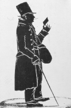
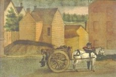

On a typical day in the eighteenth century, a large number of people were visible on Albany streets. City people came face-to-face on main thoroughfares and in back alleys, around the fort, along the waterfront, and in downtown shops, stores, and markets on a daily basis. Until the 1760s, colonial Albany was a compact community of about twenty city blocks where its diverse men, women, and children were evolving an urban culture based on mutual reliance and cooperation.
As he carried the mail from the post office on Market Street to recipients in all parts of the city, William B. Winne was among the more visible members of the everyday community. He was well known in the city because, like many of his neighbors, Willie Winne held a number of other part-time jobs that together helped him make ends meet. This nostalgic characterization of him symbolizes the large and growing part of the early Albany workforce that provided the varied services that made Albany a pre-industrial city and gave city life a rhythm quite different from that of the surrounding countryside.
By the mid-1700s, city people no longer were self-sufficient. Most of them had come to rely on their neighbors for many necessities and for a range of services that were performed individually by those living beyond sight of the city stockade. As Albany's working people became increasingly specialized in their primary enterprises, they turned to their neighbors for staples and perishable products and to the city government for basic support services. These services including transportation and storage, food procurement and preparation, and mutual benefits ranging from midwifery to grave digging represented a vital element of the city's workforce and one that reached more and more deeply into every early Albany household.
Postman, custodian, contractor, manager, and inspector, Willie Winne's long work life was like that of many of his Albany neighbors in the years following the American Revolution. He held a variety of jobs, worked for wages for virtually his entire life, and was a very visible but not particularly successful member of the Albany community. While those in the service economy were once at the entry level of the city's workforce - sometimes realizing the goal of transitioning into production or commercial enterprises, by the nineteenth-century those who worked for wages or fees would represent the largest, least affluent, and most static element in an American community that was attracting large numbers of new people.
Numerous people recorded their impressions of early Albany street life. This page will provide access to those often colorful stories.
"The Three-Penny Post." Variations of this silhouette image of William B. Winne (1769-1848) were printed widely during the late nineteenth and early twentieth centuries. Copy in the Graphics Archive of the Colonial Albany Social History Project.
A cartman on upper State Street during the early 1800s. Only licensed cartmen could carry cargoes in the core city. They paid an annual fee and were required to charge specified rates, aid in garbage and trash removal, and were expected to behave civilly on city streets. From a watercolor painted by James Eights during the 1850s. Detail from a print in the collection of the New York State Museum.